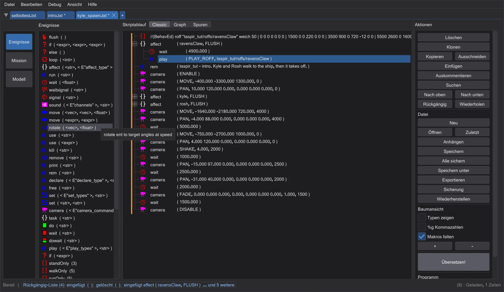
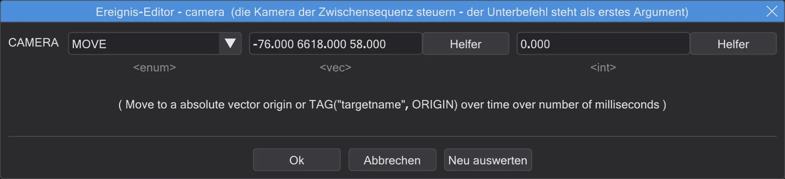

Skripte schreiben
Ein ICARUS-Skript ist ein Baum aus Befehlen. Befehle aus der Liste nehmen, in den richtigen Block setzen, ihre Werte ausfüllen.

Wie ein Skript aufgebaut ist#
Befehle laufen von oben nach unten. affect ( "Name", FLUSH ) { ... } schickt die Befehle darin an eine Figur oder Entity - so bewegt eine Zwischensequenz ihre Darsteller. task legt eine Gruppe von Befehlen an, do startet sie nebenher, dowait wartet auf sie, wait pausiert. if, else, loop wirken wie in anderen Sprachen. Nur affect, task, if, else und loop können Befehle enthalten.
Befehle einfügen#
- In der Liste Ereignisse links fügt ein Doppelklick einen Befehl hinter der gewählten Zeile ein (oder in den gewählten Block).
- Oder in den Baum ziehen: wo du loslässt, entscheidet, ob er vor, in oder hinter einer Zeile landet.
- Makros am Ende der Liste fügen mehrere Befehle auf einmal ein; Makros falten zeigt sie als eine Zeile.
- Ein Rechtsklick auf eine Zeile bietet dieselben Listen als Untermenüs, dazu bearbeiten, kopieren und Ähnliche suchen.
Der Ereignis-Editor#
Ein Doppelklick auf eine Zeile (oder Enter) öffnet den Ereignis-Editor. Oben steht der Hilfetext des Befehls, darunter hat jeder Wert sein Feld: Listen für feste Auswahl, Zahlen- und Textfelder, Dateifelder mit zum Suchen und Abspielen zum Abspielen eines Klangs oder Öffnen eines Skripts. Ist eine Karte geladen, wählt ein Pfeil neben Namensfeldern einen Namen aus der Karte.

- Ausdruck! macht ein Feld zum freien Ausdruck; Helfer baut
get ( ... ),tag ( ... )oderrandom ( ... )mit Get, Tag und Rnd; Zurücknehmen geht zurück. - Ein Wert, der nicht in seiner Liste steht, ist erlaubt - Mods bringen eigene mit - wird aber als unbekannt markiert, weil es viel öfter ein Tippfehler ist.
- Ok (Enter) schreibt die Werte, Abbrechen (Esc) verwirft sie, Neu auswerten setzt die Felder auf die Vorgaben zurück.
Wählen, verschieben, kopieren#
- Klick wählt eine Zeile, Strg+Klick nimmt eine dazu, Umschalt+Klick wählt einen Bereich. Jede Aktion wirkt auf alles Gewählte.
- Zeilen ziehen verschiebt sie. Blöcke ziehen alles darin mit; ein Block kann nicht in sich selbst.
- Kopieren, Ausschneiden, Einfügen - Einfügen in einen Block setzt die Befehle genau einmal ein, auch wenn Block und Zeilen zusammen kopiert wurden.
- Klonen fügt direkt darunter eine Kopie ein, Auskommentieren macht Zeilen zu Kommentaren und zurück, Löschen entfernt sie.
- Rückgängig und Wiederholen merken sich jeden Schritt. Ein Rechtsklick auf einen der Knöpfe zeigt den ganzen Verlauf - dort lässt sich sogar ein einzelner Schritt zurücknehmen, während alles danach bleibt.
Suchen, Ersetzen, Lesezeichen#
Suchen (Strg+F) öffnet ein Fenster, das offen bleibt: nach Befehlsnamen (Element mit Namen) oder nach einem Wert (Element enthält) suchen, mit F3 / Umschalt+F3 weiterspringen, in diesem oder allen offenen Skripten ersetzen. Lesezeichen wirken wie in Notepad++: Strg+F2 setzt eines, F2 springt zum nächsten. Sie bleiben je Datei erhalten.
Der Änderungsrand#
Mit Ansicht → Änderungsrand markiert ein farbiger Rand, was du geändert hast: orange = geändert, nicht gespeichert; grün = geändert und gespeichert; blau = wieder wie das Original. Darüberfahren zeigt die Originalzeile, Rechtsklick auf eine Zeile → Original wiederherstellen stellt nur diesen Befehl zurück.